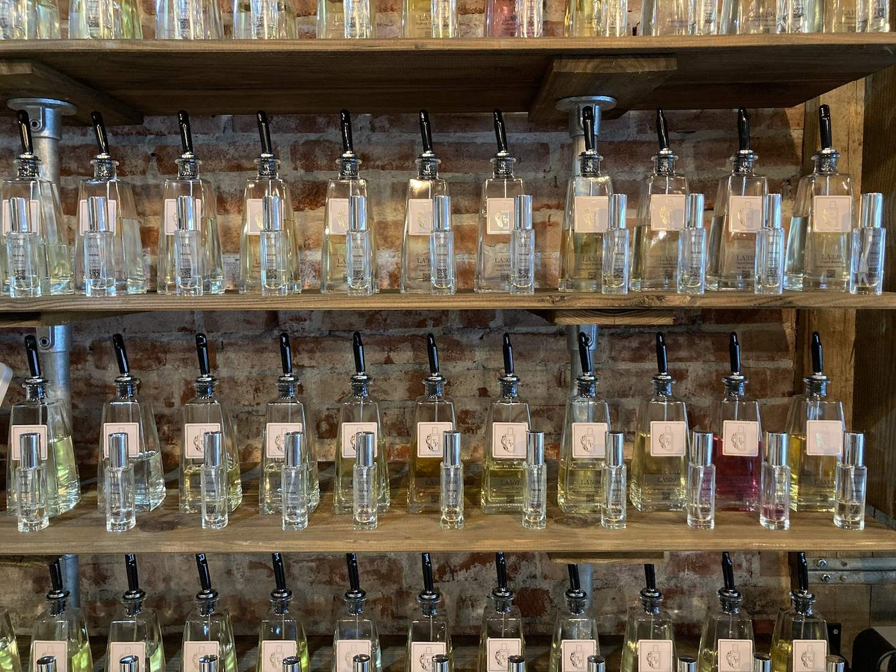
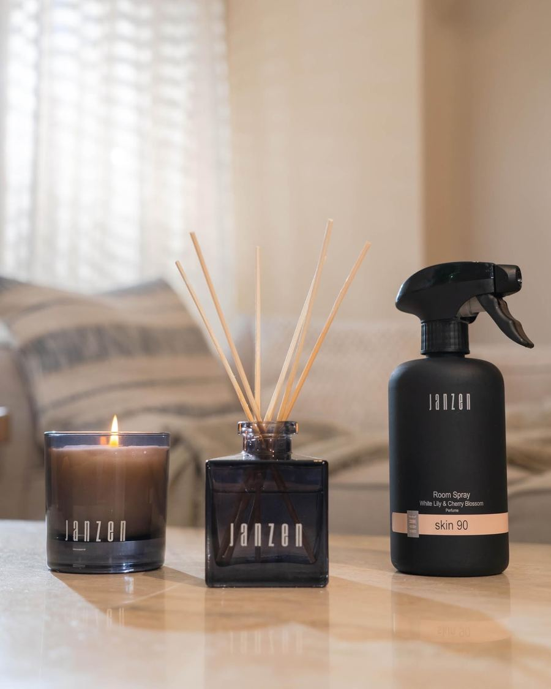
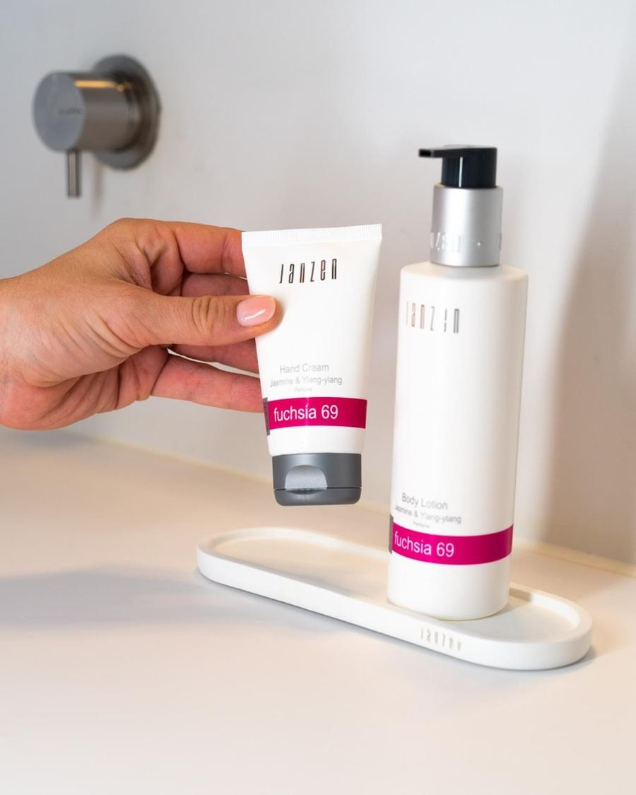
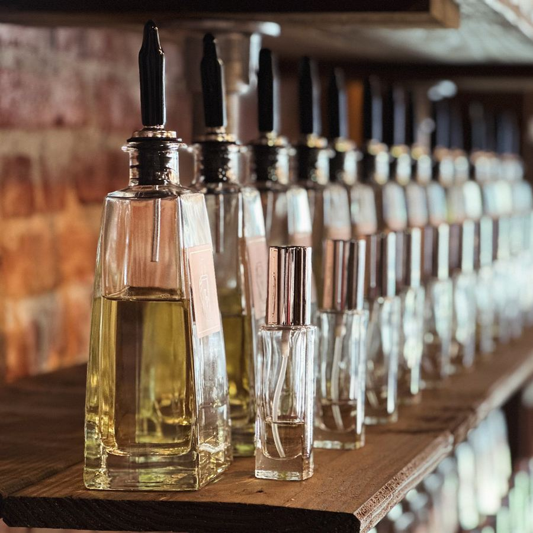
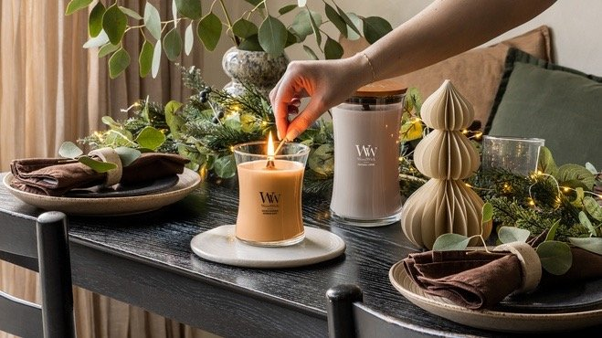

JANZEN
Het home- en bodyconcept van JANZEN staat voor ingetogen luxe, puurheid en design. Elk product heeft een eigen parfum, en de producten vullen elkaar aan: eerst het doucheschuim, daarna de bodylotion in dezelfde geur. Zo blijft de geur de hele dag hangen.
Voor in huis zijn er de bekende geurstokjes en geurkaarsen. Alle producten zijn vrij van parabenen, siliconen, minerale oliën en dierlijke bestanddelen, en niet getest op dieren. Twijfel je over je huid? Kies dan een geur voor in huis.
"Na de brandstore in 's-Hertogenbosch het meest uitgebreide verkooppunt van Nederland."


TapParfum
Geuren geïnspireerd op designer parfums, voor een eerlijke prijs. TapParfum is het eerste hervulbare parfumconcept: je flesje wordt opnieuw gevuld, dus er hoeven niet steeds nieuwe flesjes gemaakt en vervoerd te worden.
Waarom zijn parfums zo duur? Vooral door marketing, tussenpersonen en logistiek. TapParfum laat die weg en wil iedereen zijn of haar favoriete geur geven voor een betaalbare prijs.
- Hervulbaar
- Betaalbaar
- Dames- en herengeuren
- Eerst ruiken in de winkel

WoodWick
WoodWick maakt sinds 2006 geurkaarsen met een herkenbaar design. Het bekendste kenmerk is de houten lont: die knispert zacht en rustgevend tijdens het branden.
Met de bredere lonten van PlusWick en HearthWick krijg je een grotere vlam en nog meer sfeer. Een fijne kaars voor jezelf of als cadeau.
Bekijk de kaarsen in de winkel
Kom langs in Oudenbosch
Je vindt ons aan de Professor van Ginnekenstraat 14. Vraag over een geur of een cadeau? Bel of stuur een WhatsApp.
Mijn Moment
Betaalbare luxe, als cadeau of voor jezelf
Openingstijden
| Maandag | Gesloten |
| Dinsdag | 10.00 - 17.00 |
| Woensdag | 10.00 - 17.00 |
| Donderdag | 10.00 - 17.00 |
| Vrijdag | 10.00 - 17.00 |
| Zaterdag | 10.00 - 17.00 |
| Zondag | Gesloten |
Tijdens de korte schoolvakanties (regio zuid) zijn we vaak gesloten. Afwijkende tijden zie je altijd op Google.